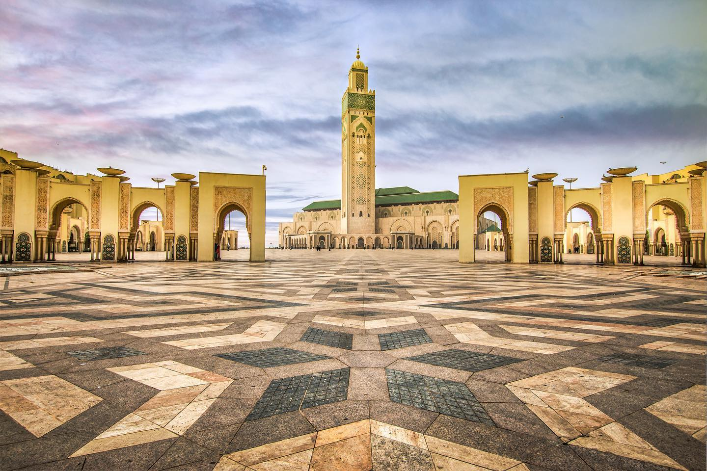
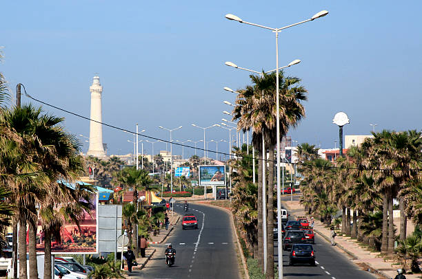
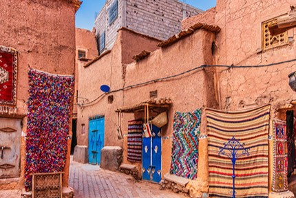
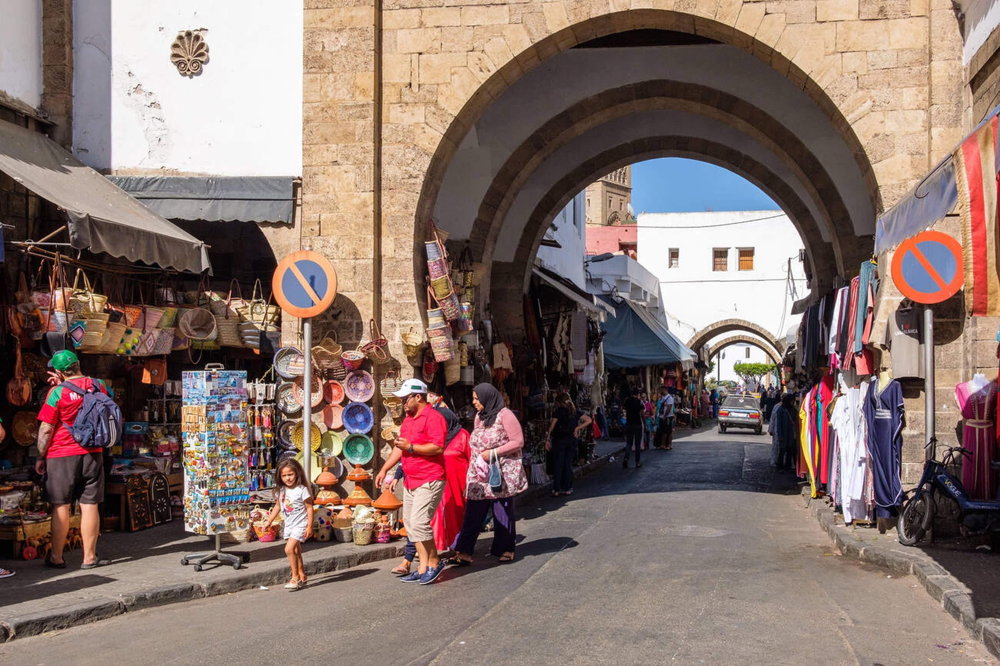
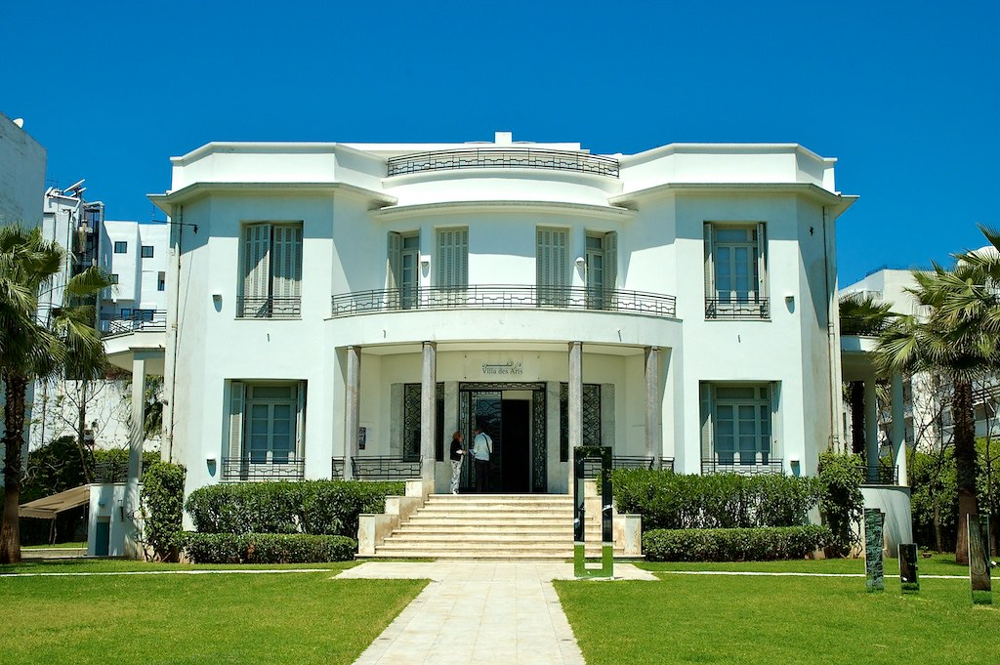
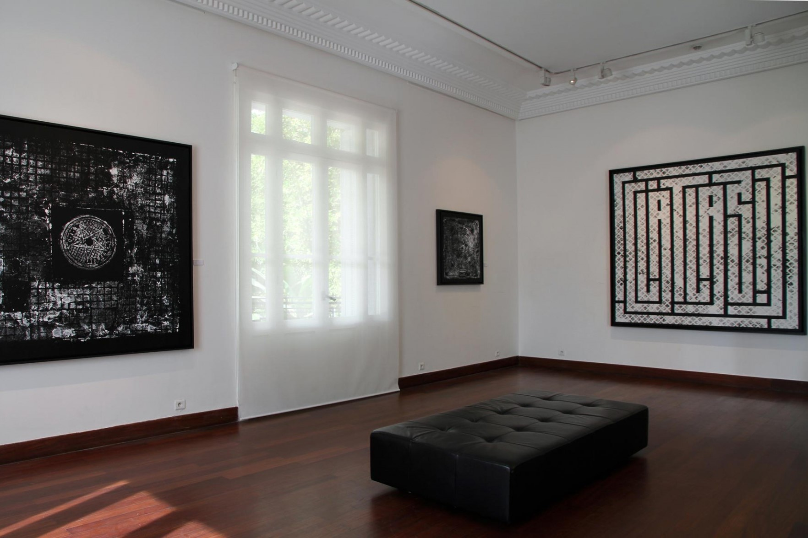

A glipmse into Casablanca's history
Casablanca, Morocco’s largest city, has a dynamic history that reflects
its evolution from a modest settlement to a bustling metropolis.
Originally founded by the Phoenicians in the 7th century as "Anfa," it
became a strategic trading port in the 7th century.
In the 15th century, the city was fortified by the Portuguese, who named
it Casa Branca, meaning "White House." However, it remained relatively
small until the French Protectorate in the early 20th century, when it
underwent rapid urban development and modernization.
Casablanca became a key economic center, with a blend of modern
and traditional architecture, including the stunning Hassan II Mosque,
one of the largest mosques in the world showcasing stunning Moorish
architecture.
Today, it is known for its vibrant culture and bustling markets,
attracting visitors looking to experience both its historical roots and
contemporary urban life.
Top Casablanca's attractions
| Hassan II Mosque | The Cornich |
|---|---|
|
One of the largest mosques in the world, renowned for
its stunning architecture and oceanfront setting. |
A lively waterfront promenade lined with restaurants
and cafes, perfect for leisurely strolls with ocean views. |
  |
  |
{kind=link}
{kind=link}
| Old Medina | Villa des Arts |
|---|---|
| A historic area featuring narrow streets, traditional shops, and a taste of local life. | An art museum showcasing contemporary Moroccan art and hosting cultural events. |
|   |   |
{kind=link}
{kind=link}
{kind=link}
{kind=link}